前段时间刷Leetcode 5。找回文子串这个事情，比较容易想到的算法是确定一个中心点，然后向两侧扩展的中心扩展算法，这个算法实现起来简单方便，时间复杂度是$O(n^2)$，和$O(n^3)$的枚举所有子串比起来不算太坏，但是这个算法没有充分利用前面计算出的回文信息来辅助后面的计算，从这里可以看出也许还有优化的空间。
然而我自己可想不到怎么优化，于是看Leetcode上的解答，发现了 Manacher 这个神奇的玩意，看了一下感觉挺妙0的。
预处理
为了处理方便，我们首先将原来的字符串头尾和每两个字符中间都加上一个分隔符（设为#），如：
原串：
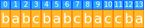
预处理过后：
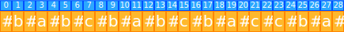
这样一来，原本形如abba的偶数长回文字符串会变成#a#b#b#a#的奇数长回文字符串，在进行计算时不再需要分开处理。
同时，第i个位置上的字符被映射到了新字符串的$2 \times i+1$个位置，或者说新字符串的第j个位置上的字符是原字符串的第$i/2$1个位置上的字符。
回文半径表
回文半径2
所谓回文半径，指的就是以某个字符为中心的最长回文字符串的结尾到这个字符的距离，同时由于回文数的定义，也等于这个字符串的头到这个字符的距离，例如上例中的，以其为中心的最长回文字符串为：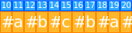，所以其回文半径就是$20-15=15-10=5$。
显然回文半径最长的一个元素也是最长的回文字符串的中间元素，也就是说我们只要找到了这个回文半径最长的元素就找到了最长的回文字符串。
回文半径表
就是把所有字符对应的回文半径填进表里：
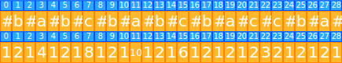
打出了这张表就能很方便地知道最长子字符串的长度和位置了。
那么怎么打这张表呢？
显然不能用和中心扩展算法相似的方法去打，那样对时间复杂度毫无助益，而是要尽可能使用前面的数据推后面的数据。
我们来看几个情况：
情况1
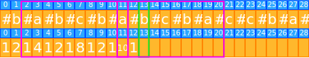
例如这个回文半径表第0-12个元素已经计算好了，我们要计算第13个元素，这里称为i。
之前得到的可以覆盖到整个字符串最右边的回文字符串中心位置是第11个元素，这里称为mid。
此时要找到i关于mid的对称位置，这里就是第9个元素，称为j。
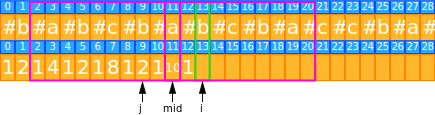
显然这里的i可以看作是j以mid为中心翻转过来的，而以j为中心的回文字符串也可以以mid为中心翻转成以i为中心的回文字符串，如下：
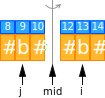
所以i处的值应该是和j一样的：
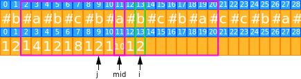
情况2
然而按照上面的方法，这里会出问题：
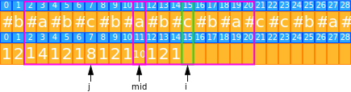
因为此时以j为中心的回文字符串在翻转之后（注意这里的图为了清晰起见只画了以j为中心的回文字符串的左半边，右半边画了会重叠起来我就没画）：
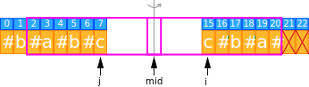
其中21和22位置上的元素已经不在以mid为中心的回文串内部了，所以我们并不能保证21和22号元素一定和1号和2号元素相等（实际上在这个例子中它们确实并不相等），在这种情况下，我们只能保证以i为中心，到以mid为中心的回文串的结尾3为止的串一定的是回文的。对于后面的元素，我们只能直接暴力地进行匹配（即21和9匹配，22和8匹配）。
情况3
当我们要计算第21个元素：
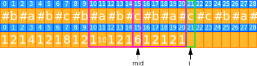
这时i已经完全在mid为中心的回文串外，也就是说我们目前没有任何和i为中心的回文串有关的已知信息，此时只能暴力地进行匹配了。
总结
总的来说，生成这张表的算法是：
对每串中的元素个i：
若i在已知覆盖的最右的回文串右边，则暴力匹配
若i在已知覆盖的最右的回文串中
找出i关于mid的对称元素j
若j的回文半径大于mid为中心的回文串的左侧到j的距离
从mid为中心的回文串的右侧开始暴力匹配
否则
回文半径表中i对应的值就和j对应的值一样
代码实现
那么我们就能得到如下代码：
首先是预处理：
1 | func padding(s string) string { |
然后是打表：
1 | func palindromeRadiusTable(s string) []int { |
稍加修改，就能得到最长回文子串的求法：
1 | func longestPalindrome(s string) string { |
凭什么它是O(n)
我们看这个rightMostIndexRight变量，看代码就知道了，设数组长度为n，则：
rightMostIndexRight从来没有减少过，一直在增加- 每次匹配成功，
rightMostIndexRight都将增加1 rightMostIndexRight不会超过n
所以实际执行匹配的次数不会超过n，即算法是O(n)的。
0. 真实想法：wcnm这怎么想到的，Manacher NB！ ↩
1. 这里的除号是指类C语言整数除法 ↩
2. leetcode上的讲解中，回文半径是不包含中心字符本身的，这样定义的回文半径会比这里讲的小1 ↩
3. 这里的粗体是为了把词句分开来……自然语言的括号意思和我想要的不同……总之能看就行 ↩